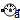

Sensors to measure variables in 1D rotational mechanical components
This package contains ideal sensor components that provide the connector variables as signals for further processing with the Modelica.Blocks library.
Extends from Modelica.Icons.SensorsPackage (Icon for packages containing sensors).
| Name | Description |
|---|---|
| AngleSensor | Ideal sensor to measure the absolute flange angle |
| SpeedSensor | Ideal sensor to measure the absolute flange angular velocity |
|  AccSensor | Ideal sensor to measure the absolute flange angular acceleration |
| RelAngleSensor | Ideal sensor to measure the relative angle between two flanges |
| RelSpeedSensor | Ideal sensor to measure the relative angular velocity between two flanges |
| RelAccSensor | Ideal sensor to measure the relative angular acceleration between two flanges |
| TorqueSensor | Ideal sensor to measure the torque between two flanges (= flange_a.tau) |
| PowerSensor | Ideal sensor to measure the power between two flanges (= flange_a.tau*der(flange_a.phi)) |
| MultiSensor | Ideal sensor to measure the torque and power between two flanges (= flange_a.tau*der(flange_a.phi)) and the absolute angular velocity |
Ideal sensor to measure the absolute flange angle
Measures the absolute angle phi of a flange in an ideal way and provides the result as output signal phi (to be further processed with blocks of the Modelica.Blocks library).
Extends from Rotational.Interfaces.PartialAbsoluteSensor (Partial model to measure a single absolute flange variable).
| Name | Description |
|---|---|
| flange | Flange of shaft from which sensor information shall be measured |
| phi | Absolute angle of flange as output signal [rad] |
Ideal sensor to measure the absolute flange angular velocity
Measures the absolute angular velocity w of a flange in an ideal way and provides the result as output signal w (to be further processed with blocks of the Modelica.Blocks library).
Extends from Rotational.Interfaces.PartialAbsoluteSensor (Partial model to measure a single absolute flange variable).
| Name | Description |
|---|---|
| flange | Flange of shaft from which sensor information shall be measured |
| w | Absolute angular velocity of flange as output signal [rad/s] |
Ideal sensor to measure the absolute flange angular acceleration
Measures the absolute angular acceleration a of a flange in an ideal way and provides the result as output signal a (to be further processed with blocks of the Modelica.Blocks library).
Extends from Rotational.Interfaces.PartialAbsoluteSensor (Partial model to measure a single absolute flange variable).
| Name | Description |
|---|---|
| flange | Flange of shaft from which sensor information shall be measured |
| a | Absolute angular acceleration of flange as output signal [rad/s2] |
Ideal sensor to measure the relative angle between two flanges
Measures the relative angle phi_rel between two flanges in an ideal way and provides the result as output signal phi_rel (to be further processed with blocks of the Modelica.Blocks library).
Extends from Rotational.Interfaces.PartialRelativeSensor (Partial model to measure a single relative variable between two flanges).
| Name | Description |
|---|---|
| flange_a | Left flange of shaft |
| flange_b | Right flange of shaft |
| phi_rel | Relative angle between two flanges (= flange_b.phi - flange_a.phi) as output signal [rad] |
Ideal sensor to measure the relative angular velocity between two flanges
Measures the relative angular velocity w_rel between two flanges in an ideal way and provides the result as output signal w_rel (to be further processed with blocks of the Modelica.Blocks library).
Extends from Rotational.Interfaces.PartialRelativeSensor (Partial model to measure a single relative variable between two flanges).
| Name | Description |
|---|---|
| flange_a | Left flange of shaft |
| flange_b | Right flange of shaft |
| w_rel | Relative angular velocity between two flanges (= der(flange_b.phi) - der(flange_a.phi)) as output signal [rad/s] |
Ideal sensor to measure the relative angular acceleration between two flanges
Measures the relative angular acceleration a_rel between two flanges in an ideal way and provides the result as output signal a_rel (to be further processed with blocks of the Modelica.Blocks library).
Extends from Rotational.Interfaces.PartialRelativeSensor (Partial model to measure a single relative variable between two flanges).
| Name | Description |
|---|---|
| flange_a | Left flange of shaft |
| flange_b | Right flange of shaft |
| a_rel | Relative angular acceleration between two flanges as output signal [rad/s2] |
Ideal sensor to measure the torque between two flanges (= flange_a.tau)
Measures the cut-torque between two flanges in an ideal way and provides the result as output signal tau (to be further processed with blocks of the Modelica.Blocks library).
Extends from Rotational.Interfaces.PartialRelativeSensor (Partial model to measure a single relative variable between two flanges).
| Name | Description |
|---|---|
| flange_a | Left flange of shaft |
| flange_b | Right flange of shaft |
| tau | Torque in flange flange_a and flange_b (tau = flange_a.tau = -flange_b.tau) as output signal [N.m] |
Ideal sensor to measure the power between two flanges (= flange_a.tau*der(flange_a.phi))
Measures the power between two flanges in an ideal way and provides the result as output signal power (to be further processed with blocks of the Modelica.Blocks library).
Extends from Rotational.Interfaces.PartialRelativeSensor (Partial model to measure a single relative variable between two flanges).
| Name | Description |
|---|---|
| flange_a | Left flange of shaft |
| flange_b | Right flange of shaft |
| power | Power in flange flange_a as output signal [W] |
Ideal sensor to measure the torque and power between two flanges (= flange_a.tau*der(flange_a.phi)) and the absolute angular velocity
Measures the absolute angular velocity of a flange_a, the cut-torque and power between two flanges in an ideal way and provides the results as output signals w, tau and power, respectively.
Extends from .Modelica.Mechanics.Rotational.Interfaces.PartialRelativeSensor (Partial model to measure a single relative variable between two flanges).
| Name | Description |
|---|---|
| flange_a | Left flange of shaft |
| flange_b | Right flange of shaft |
| power | Power in flange flange_a as output signal [W] |
| w | Absolute angular velocity of flange_a as output signal [rad/s] |
| tau | Torque in flange flange_a and flange_b (tau = flange_a.tau = -flange_b.tau) as output signal [N.m] |